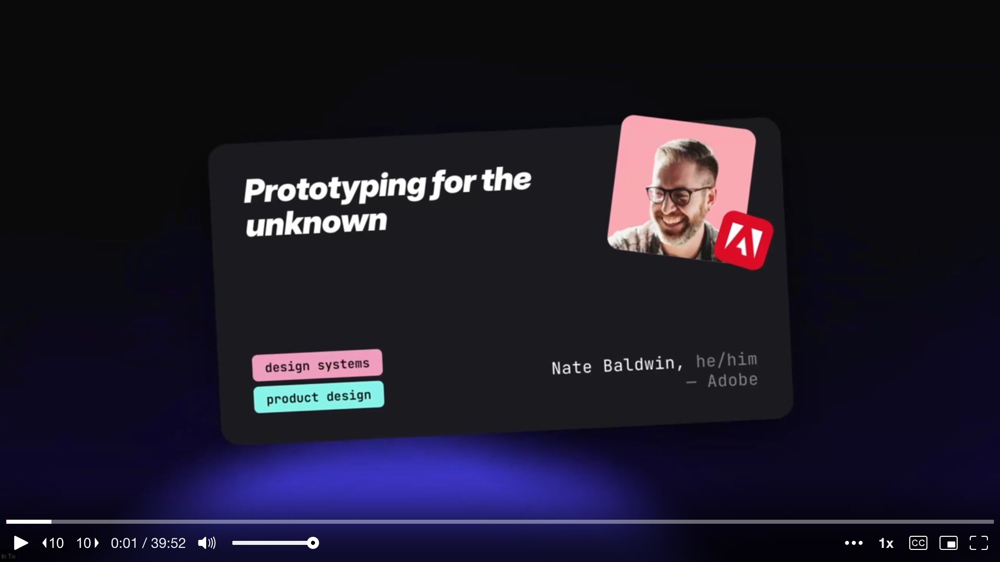
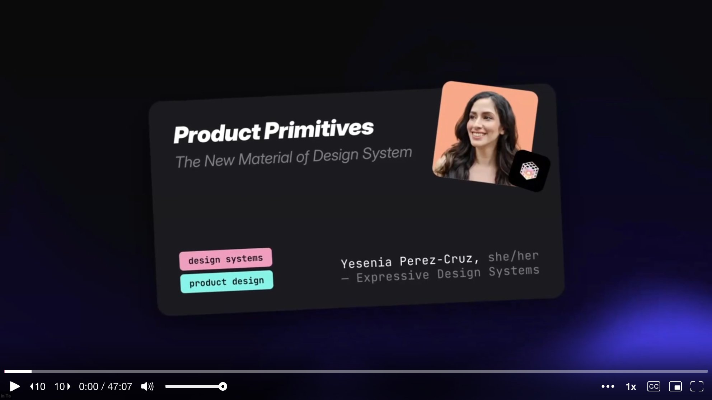
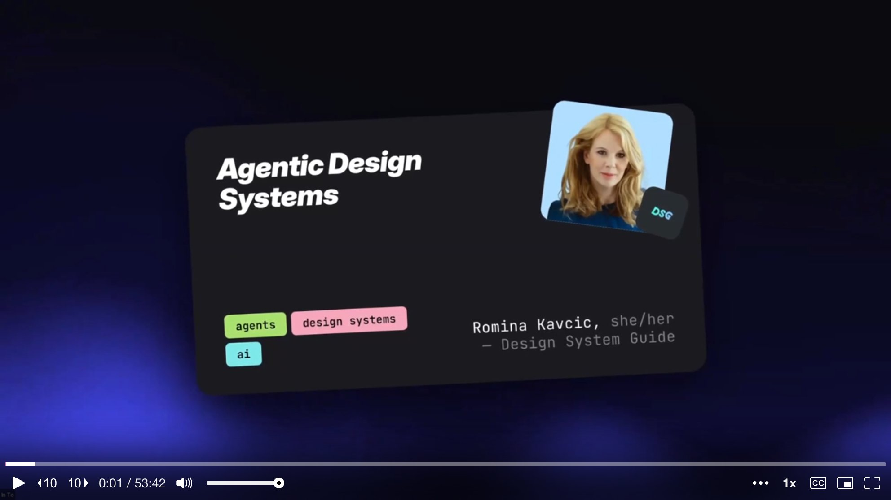
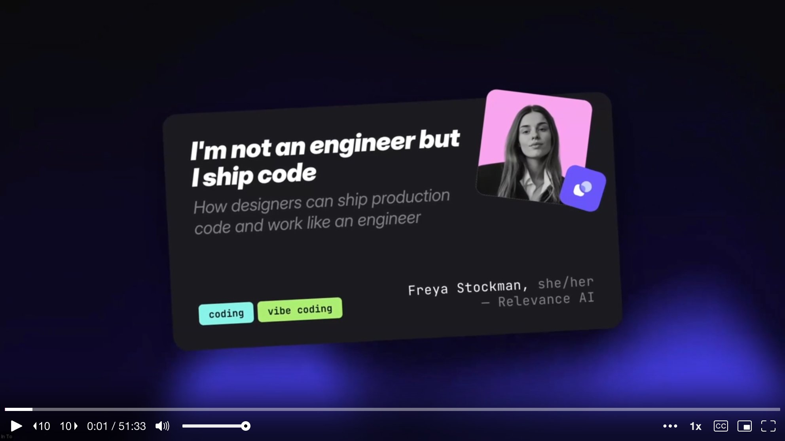
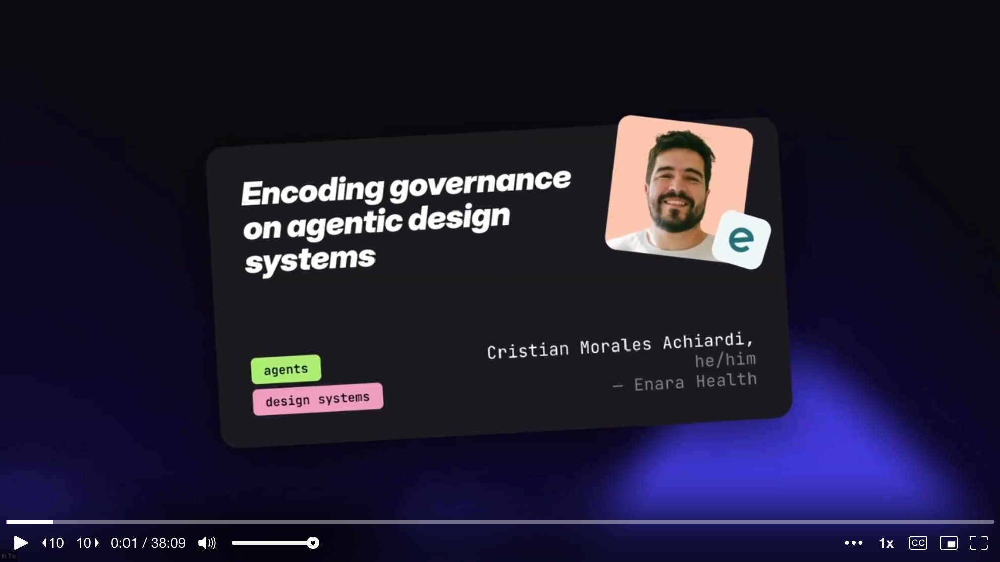

Bonus Talk
A Design System That Enables Humans and Machines to Co-Create Production-Ready UI — at Scale
Victoria Tholérus & Aleksander Djordjevic — Spotify (Encore)

Talk 1
Prototyping for the Unknown
Nate Baldwin — Sr Staff Experience Designer, Adobe Spectrum
Talk 2
WhatsApp Web: Reclaiming UI Excellence through Vibe Coding
Sebastian Rousseau — Senior Product Designer, WhatsApp

Talk 3
Product Primitives: The New Material of Design Systems
Yesenia Perez-Cruz — Design Systems Consultant, Expressive Design Systems

Talk 4
The Path to an AI-Enabled Design System: Our Approach and Lessons Learned
Andressa Lombardo & Eddie Machado — Miro

Talk 5
Agentic Design Systems
Romina Kavcic — Design System Lead, The Design System Guide

Talk 6
I'm Not an Engineer but I Ship Code
Freya Stockman — Product Designer, Relevance AI

Talk 7
Context > Probability: Design Systems as AI Infrastructure
Jesse Gardner — Director, User Research, New York State

Talk 8
Encoding Governance on Agentic Design Systems
Cristian Morales Achiardi — Design Engineer, Enara Health